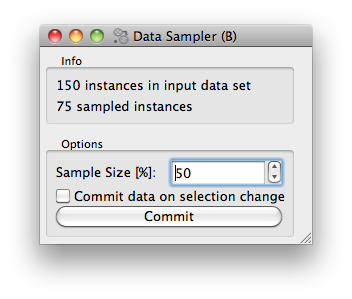

This is documentation for Orange 2.7. For the latest documentation, see Orange 3.
Settings and Controls¶
In the previous section of our tutorial we have just built a simple sampling widget. Let us now make this widget a bit more useful, by allowing a user to set the proportion of data instances to be retained in the sample. Say we want to design a widget that looks something like this:
What we added is an Options box, with a spin entry box to set the sample size, and a check box and button to commit (send out) any change we made in setting. If the check box with “Commit data on selection change” is checked, than any change in the sample size will make the widget send out the sampled data set. If data sets are large (say of several thousands or more) instances, we may want to send out the sample data only after we are done setting the sample size, hence we left the commit check box unchecked and press “Commit” when we are ready for it.
This is a very simple interface, but there is something more to it. We want the settings (the sample size and the state of the commit button) to be saved. That is, any setting we made, after closing our widget (or after going out of Orange application that includes this widget, or after closing Orange Canvas), we want to save so that the next time we open the widget the settings is there as we have left it. There is some complication to it, as widget can be part of an application, or part of some schema in the Canvas, and we would like to have the settings application- or schema-specific.
Widgets Settings¶
Luckily, since we use the base class OWWidget, the settings will be handled just fine. We only need to tell which variables we will use for the settings. For Python inspired readers: these variables can store any complex object, as long as it is picklable. In our widget, we will use two settings variables, and we declare this just after the widget class definition.
class OWDataSamplerB(OWWidget):
settingsList = ['proportion', 'commitOnChange']
Any setting has to be initialized, and then we need to call loadSettings() to override defaults in case we have used the widget before and the settings have been saved
self.proportion = 50
self.commitOnChange = 0
self.loadSettings()
Now anything we do with the two variables (self.proportion and self.commitOnChange) will be saved upon exiting our widget. In our widget, we won’t be setting these variables directly, but will instead use them in conjunction with GUI controls.
Controls and OWGUI¶
Now we could tell you how to put different Qt controls on the widgets and write callback functions that set our settings appropriately. This is what we have done before we got bored with it, since the GUI part spanned over much of the widget’s code. Instead, we wrote a library called OWGUI (I never liked the name, but could never come up with something better). With this library, the GUI definition part of the options box is a bit dense but rather very short
box = OWGUI.widgetBox(self.controlArea, "Info")
self.infoa = OWGUI.widgetLabel(box, 'No data on input yet, waiting to get something.')
self.infob = OWGUI.widgetLabel(box, '')
OWGUI.separator(self.controlArea)
self.optionsBox = OWGUI.widgetBox(self.controlArea, "Options")
OWGUI.spin(self.optionsBox, self, 'proportion', min=10, max=90, step=10,
label='Sample Size [%]:', callback=[self.selection, self.checkCommit])
OWGUI.checkBox(self.optionsBox, self, 'commitOnChange', 'Commit data on selection change')
OWGUI.button(self.optionsBox, self, "Commit", callback=self.commit)
self.optionsBox.setDisabled(1)
We are already familiar with the first part - the Info group box. To make widget nicer, we put a separator between this and Options box. After defining the option box, here is our first serious OWGUI control. Called a spin, we give it place where it is drawn (self.optionsBox), and we give it the widget object (self) so that it knows where the settings and some other variables of our widget are.
Next, we tell the spin box to be associated with a variable called proportion. This simply means that any change in the value the spin box holds will be directly translated to a change of the variable self.proportion. No need for a callback! But there’s more: any change in variable self.proportion will be reflected in the look of this GUI control. Say if there would be a line self.proportion = 70 in your code, our spin box control would get updated as well. (I must admit I do not know if you appreciate this feature, but trust me, it may really help prototyping widgets with some more complex GUI.
The rest of the OWGUI spin box call gives some parameters for the control (minimum and maximum value and the step size), tells about the label which will be placed on the top, and tells it which functions to call when the value in the spin box is changed. We need the first callback to make a data sample and report in the Info box what is the size of the sample, and a second callback to check if we can send this data out. In OWGUI, callbacks are either references to functions, or a list with references, just like in our case.
With all of the above, the parameters for the call of OWGUI.checkBox should be clear as well. Notice that this and a call to OWGUI.spin do not need a parameter which would tell the control the value for initialization: upon construction, both controls will be set to the value that is pertained in the associated setting variable.
That’s it. Notice though that we have, as a default, disabled all the controls in the Options box. This is because at the start of the widget, there is no data to sample from. But this also means that when process the input tokens, we should take care for enabling and disabling. The data processing and token sending part of our widget now is
def set_data(self, dataset):
if dataset is not None:
self.dataset = dataset
self.infoa.setText('%d instances in input data set' % len(dataset))
self.optionsBox.setDisabled(0)
self.selection()
self.commit()
else:
self.send("Sampled Data", None)
self.optionsBox.setDisabled(1)
self.infoa.setText('No data on input yet, waiting to get something.')
self.infob.setText('')
def selection(self):
indices = Orange.data.sample.SubsetIndices2(p0=self.proportion / 100.)
ind = indices(self.dataset)
self.sample = self.dataset.select(ind, 0)
self.infob.setText('%d sampled instances' % len(self.sample))
def commit(self):
self.send("Sampled Data", self.sample)
def checkCommit(self):
if self.commitOnChange:
self.commit()
You can now also inspect the complete code of this widget. To distinguish it with a widget we have developed in the previous section, we have designed a special icon for it. If you wish to test is widget in the Orange Canvas, put its code in the orangedemo directory we have created for the previous widget and try it out using a schema with a File and Data Table widget.
{kind=link}

Well-behaved widgets remember their settings - the state of their checkboxes and radio-buttons, the text in their line edits, the selections in their combo boxes and similar. These settings are even maintained across sessions. This document describes the Orange’s methods that take care of that.
Orange doesn’t really save the state of the controls but instead saves the value of the corresponding attributes. For a check box there should be a corresponding widget’s attribute recording the check box’s state so that when the user changes a check box, the attribute changes and vice-versa. You can create such a link manually, or you can use the OWGUI module instead; for instance, for a check box, use OWGUI.checkBox().
The settings fall into two groups. Some of them do not depend on the data, while other are context-dependent. For the first to be saved properly, you only need to list them in the settingsList in the widget definition, as already described.
Context dependent settings¶
Context dependent settings usually depend upon the attributes that are present in the data set domain. For instance, the scatter plot widget contains settings that specify the attributes for x and y axis, and the settings that define the color, shape and size of the examples in the graph. An even more complicated case is the widget for data selection with which one can select the examples based on values of certain attributes. Before applying the saved settings, these widgets needs to check their compliance with the domain of the actual data set. To be truly useful, context dependent settings needs to save a setting configuration for each particular data set used. That is, when given a particular data set, it has to select the saved settings that is applicable and matches best currently used data set.
Saving, loading and matching contexts is taken care of by context handlers. Currently, there are only two classes of context handlers implemented. The first one is the abstract ContextHandler and the second one is DomainContextHandler in which the context is defined by the data set domain and where the settings contain attribute names. The latter should cover most of your needs, while for more complicated widgets you will need to derive a new classes from it. There may even be some cases in which the context is not defined by the domain, in which case the ContextHandler will be used as a base for your new handler.
Contexts need to be declared, opened and closed. Opening and closing usually takes place (in the opposite order) in the function that handles the data signal. This is how it looks in the scatter plot (the code is somewhat simplified for clarity).
def cdata(self, data):
self.closeContext()
self.data = data
self.graph.setData(data)
self.graph.insideColors = None
self.graph.clusterClosure = None
self.initAttrValues()
self.openContext("", data)
self.updateGraph()
self.sendSelections()
In general, the function should go like this.
- Do any clean-up you need, but without clearing any of the settings that need to be saved. Scatter plot needs none.
- Call self.closeContext(); this ensures that all the context dependent settings (e.g. attribute names from the list boxes) are remembered.
- Get the data (or whatever you do) and set the controls to some defaults as if there were no context retrieving mechanism. Scatter plot does it by calling initAttrValues() which assigns the first two attributes to the x and y axis and the class attribute to the color. At this phase, you shouldn’t call any functions that depend on the settings, such as drawing the graph.
- Call self.openContext (more about the arguments later). This will search for a suitable context and assign the controls new values if one is found. If there is no saved context that can be used, a new context is created and filled with the default values that were assigned at the previous point.
- Finally, adjust the widget according to the retrieved controls. Scatter plot now plots the graph by calling updateGraph.
closeContext has an argument, the name of the context. If omitted (like above), the default name ("") is used. When opening the context, we give the name and some arguments on which the context depends. In case of DomainContextHandler, which scatter plot uses, we can give it a domain or any object that has a field domain containing a domain. Whether a saved context can be reused is judged upon the presence of attributes in the domain.
If the widget is constructed appropriately (that is, if it strictly uses OWGUI controls instead of the Qt’s), no other administration is needed to switch the context.
Except for declaring the context settings, that is. Scatter plot has this just below the settingsList
contextHandlers = {"": DomainContextHandler("",
[("attrX", DomainContextHandler.Required),
("attrY", DomainContextHandler.Required),
("attrLabel", DomainContextHandler.Optional),
("attrShape", DomainContextHandler.Optional),
("attrSize", DomainContextHandler.Optional)])}
contextHandlers is a dictionary whose keys are contexts’ names. Each widget can have multiple contexts; for an unrealistic example, consider a scatter plot which gets two data sets and uses one attribute from the first for the x axis, and an attribute from the other for y. Since we won’t see this often, the default name for a context is an empty string.
The values in the dictionary are context handlers. Scatter plot declares that it has a DomainContextHandler with name “” (sorry for the repetition) with attributes “attrX”, “attrY”, “attrLabel”, “attrShape” and “attrSize”. The first two are required, while the other three are optional.
Using DomainContextHandler¶
What we said above is not exactly true. DomainContextHandler.Required is the default flag, so ("attrX", DomainContextHandler.Required) can be replaced by simply "attrX". And the latter three have the same flags, so they can be grouped into (["attrLabel", "attrShape", "attrSize"], DomainContextHandler.Optional). So what scatter plot really says is:
contextHandlers = {"": DomainContextHandler("", [
"attrX", "attrY",
(["attrLabel", "attrShape", "attrSize"], DomainContextHandler.Optional)])}
What do Optional and Required mean? Say that you used the scatter plot on the data with attributes A, B, C and D; A and B are used for the x and y axis and D defined the colors of examples. Now you load a new data with attributes A, B, E, and F. The same context can be used - A and B will again be shown on x and y axis and the default (the one set by self.initAttrValues) will be used for the color since the attribute D is missing in the new data. Now comes the third data set, which only has attributes A, D and E. The context now can’t be reused since the attribute used for the required attrY (the y axis) is missing.
OK, now it is time to be a bit formal. As said, contextHandlers is a dictionary and the values in it need to be context handlers derived from the abstract class ContextHandler. The way it is declared of course depends upon its constructor, so the above applies only to the usual DomainContextHandler.
DomainContextHandler‘s constructor has the following arguments
- contextName
- The name of the context; it should consist of letters and digits (it is used as a part of a variable name). In case the widget has multiple contexts, they should have unique names. In most cases there will be only one context, so you can leave it empty.
- fields
- The names of the attributes to be saved and the corresponding flags. They are described in more details below.
- cloneIfImperfect
- States that when the context doesn’t match perfectly, that is, unless the domain is exactly the same as the domain from which the context was originally created, openContext shouldn’t reuse a context but create a copy of the best matching context instead. Default is True.
- loadImperfect
- tells whether the contexts that do not match perfectly (see above) should be used or not. Default is True.
- findImperfect
- Tells whether imperfect contexts match at all or not (this flag is somewhat confused with loadImperfect, but it may come useful some day). Default is True again.
- syncWithGlobal
- Tells whether instances of this widget should have a shared list of contexts (default). The alternative is that each keeps its own list; each individual list is merged with the global when the widget is deleted from the canvas (or when the canvas is closed). This setting only applies to canvas, while in saved applications widgets always have separate settings lists.
- maxAttributesToPickle
- To keep the size of the context file small, settings for domains exceeding a certain number of attributes are not pickled. Default is 100, but you can increase (or decrease this) if you need to.
The truly interesting argument is fields. It roughly corresponds to the settingsList in that each element specifies one widget attribute to be saved. The elements of fields can be strings, tuples and/or instances of ContextField (whatever you give, it gets automatically converted to the latter). When given as tuples, they should consist of two elements, the field name (just like in settingsList) and a flag. Here are the possible flags:
- DomainContextHandler.Optional, DomainContextHandler.SelectedRequired and DomainContextHandler.Required state whether the attribute is optional or required, as explained above. Default is Required. DomainContextHandler.SelectedRequired is applicable only if the control is a list box, where it means that the attributes that are selected are required while the other attributes from the list are not.
- DomainContextHandler.NotAttribute the setting is not an attribute name. You can essentially make a check box context dependent, but we very strongly dissuade from this since it can really confuse the user if some check boxes change with the data while most do not.
- DomainContextHandler.List tells that the attribute corresponds to a list box.
Flags can be combined, so to specify a list in which all attributes are required, you would give DomainContextHandler.List + DomainContextHandler.Required. Since this combination is common, DomainContextHandler.RequiredList can be used instead.
There are two shortcuts. The default flag is DomainContextHandler.Required. If your attribute is like this (as most are), you can give only its name instead of a tuple. This is how "attrX" and "attrY" are given in the scatter plot. If there are multiple attributes with the same flags, you can specify them with a tuple in which the first element is not a string but a list of strings. We have seen this trick in the scatter plot, too.
But the tuples are actually a shortcut for instances of ContextField. When you say "attrX" this is actually ContextField("attrX", DomainContextHandler.Required)
Defining New Context Handlers¶
Avoid it if you can. If you can’t, here’s the list of the methods you may need to implement. You may want to copy as much from the DomainContextHandler as you can.
- __init__
- Has the same arguments as the DomainContextHandler‘s, except for the fields.
- newContext()
- Creates and returns a new context. In ContextHandler it returns an instance of Context; you probably won’t need to change this.
- openContext(widget, *args)
The method is given a widget and some additional arguments based on which the contexts are compared. In case of DomainContextHandler this is a domain. There can be one or more such arguments. Note that the method openContext which we talked about above is a method of OWBaseWidget, while here we describe a method of context handlers. Actually, OWBaseWidget.openContext(self,contextName, *args) calls the context handler’s, passing it’s self and *args.
It needs to find a matching context and copy its settings to the widget or construct a new context and copy the settings from the widget. Also, when an old context is reused, it should be moved to the beginning of the list. ContextHandler already defines this method, which should usually suffice. DomainContextHandler adds very little to it.
- closeContext
- Copies the settings from the widget by calling settingsFromWidget. You probably won’t need to overwrite it.
- match
- The method is called by openContext to find a matching context. Given an existing context and the arguments that were given to openContext (for instance, a domain), it should decide whether the context matches or not. If it returns 2, it is a perfect match (e.g. domains are the same). If it returns 0, the context is not applicable (e.g. some of the required attributes are missing). In case it returns a number between 0 and 1 (excluding 0), the higher the number the better the match. openContext will use the best matching context (or the perfect one, if found).
- settingsToWidget / settingsFromWidget
- Copy the settings to and from the widget.
- fastSave
- This function is called by the widget’s __setattr__ each time any widget’s variable is changed to immediately synchronize the context with the state of the widget. The method is really needed only when syncWithGlobal is set. When the context is closed, closeContext will save the settings anyway.
- cloneContext
- Given an existing context, it prepares and returns a copy. The method is optional; copy.deepcopy can be used instead.
Saving and loading settings¶
Settings can be saved in two different places. Orange Canvas save settings in .ini files in its application data directory. Each widget type has a separate file; for instance, the scatter plot’s settings are saved in ScatterPlot.ini. Saved schemas and applications save settings in .sav files; the .sav file is placed in the same directory as the schema or application, has the same name (except for the extension) and contains the settings for all widgets in the schema/application.
Saving and loading is done automatically by canvas or the application. In a very rare case you need it to run these operations manually, the functions involved are loadSettings(self, file=None), saveSettings(self, file=None), loadSettingsStr(self, str), saveSettingsStr(self). The first two load and save from the file; if not given, the default name (widget’s name + ini) is used. They are called by the canvas, never by a schema or an application. The last two load and save from a string and are used by schemas and applications. All the functions are defined as methods of OWBaseWidget, which all other widgets are derived from.